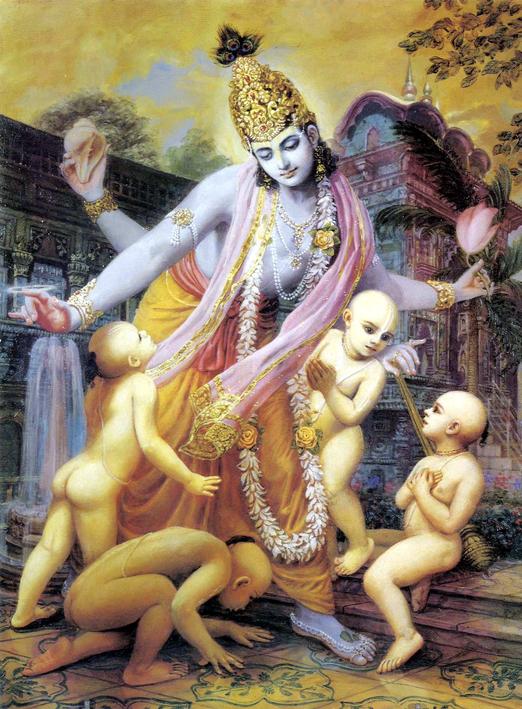

3.12.1 — Śrī Maitreya said: O learned Vidura, so far I have explained to you the glories of the form of the Supreme Personality of Godhead in His feature of kāla. Now you can hear from me about the creation of Brahmā, the reservoir of all Vedic knowledge.
3.12.2 — Brahmā first created the nescient engagements like self-deception, the sense of death, anger after frustration, the sense of false ownership, and the illusory bodily conception, or forgetfulness of one’s real identity.
3.12.3 — Seeing such a misleading creation as a sinful task, Brahmā did not feel much pleasure in his activity, and therefore he purified himself by meditation on the Personality of Godhead. Then he began another term of creation.
3.12.4 — In the beginning, Brahmā created four great sages named Sanaka, Sananda, Sanātana and Sanat-kumāra. All of them were unwilling to adopt materialistic activities because they were highly elevated due to their semen’s flowing upwards.
3.12.5 — Brahmā spoke to his sons after generating them. “My dear sons,” he said, “now generate progeny.” But due to their being attached to Vāsudeva, the Supreme Personality of Godhead, they aimed at liberation, and therefore they expressed their unwillingness.
3.12.6 — On the refusal of the sons to obey the order of their father, there was much anger generated in the mind of Brahmā, which he tried to control and not express.
3.12.7 — Although he tried to curb his anger, it came out from between his eyebrows, and a child mixed blue and red was immediately generated.
3.12.8 — After his birth he began to cry: O destiny maker, teacher of the universe, kindly designate my name and place.
3.12.9 — The all-powerful Brahmā, who was born from the lotus flower, pacified the boy with gentle words, accepting his request, and said: Do not cry. I shall certainly do as you desire.
3.12.10 — Thereafter Brahmā said: O chief of the demigods, you shall be called by the name Rudra by all people because you have so anxiously cried.
3.12.11 — My dear boy, I have already selected the following places for your residence: the heart, the senses, the air of life, the sky, the air, the fire, the water, the earth, the sun, the moon and austerity.

3.12.12 — Lord Brahmā said: My dear boy Rudra, you have eleven other names: Manyu, Manu, Mahinasa, Mahān, Śiva, Ṛtadhvaja, Ugraretā, Bhava, Kāla, Vāmadeva and Dhṛtavrata.
3.12.13 — O Rudra, you also have eleven wives, called the Rudrāṇīs, and they are as follows: Dhī, Dhṛti, Rasalā, Umā, Niyut, Sarpi, Ilā, Ambikā, Irāvatī, Svadhā and Dīkṣā.
3.12.14 — My dear boy, you may now accept all the names and places designated for you and your different wives, and since you are now one of the masters of the living entities, you may increase the population on a large scale.
3.12.15 — The most powerful Rudra, whose bodily color was blue mixed with red, created many offspring exactly resembling him in features, strength and furious nature.
3.12.16 — The sons and grandsons generated by Rudra were unlimited in number, and when they assembled together they attempted to devour the entire universe. When Brahmā, the father of the living entities, saw this, he became afraid of the situation.
3.12.17 — Brahmā told Rudra: O best among the demigods, there is no need for you to generate living entities of this nature. They have begun to devastate everything on all sides with the fiery flames from their eyes, and they have even attacked me.
3.12.18 — My dear son, you had better situate yourself in penance, which is auspicious for all living entities and which will bring all benediction upon you. By penance only shall you be able to create the universe as it was before.
3.12.19 — By penance only can one even approach the Personality of Godhead, who is within the heart of every living entity and at the same time beyond the reach of all senses.
3.12.20 — Śrī Maitreya said: Thus Rudra, having been ordered by Brahmā, circumambulated his father, the master of the Vedas. Addressing him with words of assent, he entered the forest to perform austere penances.
3.12.21 — Brahmā, who was empowered by the Supreme Personality of Godhead, thought of generating living entities and begot ten sons for the extension of the generations.
3.12.22 — Marīci, Atri, Aṅgirā, Pulastya, Pulaha, Kratu, Bhṛgu, Vasiṣṭha, Dakṣa, and the tenth son, Nārada, were thus born.
3.12.23 — Nārada was born from the deliberation of Brahmā, which is the best part of the body. Vasiṣṭha was born from his breathing, Dakṣa from a thumb, Bhṛgu from his touch, and Kratu from his hand.
3.12.24 — Pulastya was generated from the ears, Aṅgirā from the mouth, Atri from the eyes, Marīci from the mind and Pulaha from the navel of Brahmā.
3.12.25 — Religion was manifested from the breast of Brahmā, wherein is seated the Supreme Personality of Godhead Nārāyaṇa, and irreligion appeared from his back, where horrible death takes place for the living entity.
3.12.26 — Lust and desire became manifested from the heart of Brahmā, anger from between his eyebrows, greed from between his lips, the power of speaking from his mouth, the ocean from his penis, and low and abominable activities from his anus, the source of all sins.
3.12.27 — Sage Kardama, husband of the great Devahūti, was manifested from the shadow of Brahmā. Thus all became manifested from either the body or the mind of Brahmā.
3.12.28 — O Vidura, we have heard that Brahmā had a daughter named Vāk who was born from his body and who attracted his mind toward sex, although she was not sexually inclined towards him.
3.12.29 — Thus, finding their father so deluded in an act of immorality, the sages headed by Marīci, all sons of Brahmā, spoke as follows with great respect.
3.12.30 — O father, this performance in which you are endeavoring to complicate yourself was never attempted by any other Brahmā, nor by anyone else, nor by you in previous kalpas, nor will anyone dare to attempt it in the future. You are the supreme being in the universe, so how is it that you want to have sex with your daughter and cannot control your desire?
3.12.31 — Even though you are the most powerful being, this act does not suit you because your character is followed for spiritual improvement by people in general.
3.12.32 — Let us offer our respectful obeisances unto the Personality of Godhead, who, by His own effulgence, while situated in Himself, has manifested this cosmos. May He also protect religion for all goodness.
3.12.33 — The father of all Prajāpatis, Brahmā, thus seeing all his Prajāpati sons speaking in that way, became very much ashamed and at once gave up the body he had accepted. Later that body appeared in all directions as the dangerous fog in darkness.
3.12.34 — Once upon a time, when Brahmā was thinking of how to create the worlds as in the past millennium, the four Vedas, which contain all varieties of knowledge, became manifested from his four mouths.
3.12.35 — The four kinds of paraphernalia for conducting the fire sacrifice became manifest: the performer [the chanter], the offerer, the fire, and the action performed in terms of the supplementary Vedas. Also the four principles of religiosity [truth, austerity, mercy and cleanliness] and the duties in the four social orders all became manifest.
3.12.36 — Vidura said: O great sage whose only wealth is penance, kindly explain to me how and with whose help Brahmā established the Vedic knowledge which emanated from his mouth.
3.12.37 — Maitreya said: Beginning from the front face of Brahmā, gradually the four Vedas — Ṛk, Yajur, Sāma and Atharva — became manifest. Thereafter, Vedic hymns which had not been pronounced before, priestly rituals, the subject matters of the recitation, and transcendental activities were all established, one after another.
3.12.38 — He also created the medical science, military art, musical art and architectural science, all from the Vedas. They all emanated one after another, beginning from the front face.
3.12.39 — Then he created the fifth Veda — the Purāṇas and the histories — from all his mouths, since he could see all the past, present and future.
3.12.40 — All the different varieties of fire sacrifices [ṣoḍaśī, uktha, purīṣi, agniṣṭoma, āptoryāma, atirātra, vājapeya and gosava] became manifested from the eastern mouth of Brahmā.
3.12.41 — Education, charity, penance and truth are said to be the four legs of religion, and to learn this there are four orders of life with different classifications of castes according to vocation. Brahmā created all these in systematic order.
3.12.42 — Then the thread ceremony for the twice-born was inaugurated, as were the rules to be followed for at least one year after acceptance of the Vedas, rules for observing complete abstinence from sex life, vocations in terms of Vedic injunctions, various professional duties in household life, and the method of maintaining a livelihood without anyone’s cooperation by picking up rejected grains.
3.12.43 — The four divisions of retired life are the vaikhānasas, vālakhilyas, audumbaras and phenapas. The four divisions of the renounced order of life are the kuṭīcakas, bahvodas, haṁsas and niṣkriyas. All these were manifested from Brahmā.
3.12.44 — The science of logical argument, the Vedic goals of life, and also law and order, moral codes and the celebrated hymns bhūḥ, bhuvaḥ and svaḥ all became manifested from the mouths of Brahmā, and the praṇava oṁkāra was manifested from his heart.
3.12.45 — Thereafter the art of literary expression, uṣṇik, was generated from the hairs on the body of the almighty Prajāpati. The principal Vedic hymn, gāyatrī, was generated from the skin, triṣṭup from the flesh, anuṣṭup from the veins, and jagatī from the bones of the lord of the living entities.
3.12.46 — The art of writing verse, paṅkti, became manifested from the bone marrow, and that of bṛhatī, another type of verse, was generated from the life-breath of the lord of the living entities.
3.12.47 — Brahmā’s soul was manifested as the touch alphabets, his body as the vowels, his senses as the sibilant alphabets, his strength as the intermediate alphabets and his sensual activities as the seven notes of music.
3.12.48 — Brahmā is the personal representation of the Supreme Personality of Godhead as the source of transcendental sound and is therefore above the conception of manifested and unmanifested. Brahmā is the complete form of the Absolute Truth and is invested with multifarious energies.
3.12.49 — Thereafter Brahmā accepted another body, in which sex life was not forbidden, and thus he engaged himself in the matter of further creation.
3.12.50 — O son of the Kurus, when Brahmā saw that in spite of the presence of sages of great potency there was no sufficient increase in population, he seriously began to consider how the population could be increased.
3.12.51 — Brahmā thought to himself: Alas, it is wonderful that in spite of my being scattered all over, there is still insufficient population throughout the universe. There is no other cause for this misfortune but destiny.
3.12.52 — While he was thus absorbed in contemplation and was observing the supernatural power, two other forms were generated from his body. They are still celebrated as the body of Brahmā.
3.12.53 — The two newly separated bodies united together in a sexual relationship.
3.12.54 — Out of them, the one who had the male form became known as the Manu named Svāyambhuva, and the woman became known as Śatarūpā, the queen of the great soul Manu.
3.12.55 — Thereafter, by sex indulgence, they gradually increased generations of population one after another.
3.12.56 — O son of Bharata, in due course of time he [Manu] begot in Śatarūpā five children — two sons, Priyavrata and Uttānapāda, and three daughters, Ākūti, Devahūti and Prasūti.
3.12.57 — The father, Manu, handed over his first daughter, Ākūti, to the sage Ruci, the middle daughter, Devahūti, to the sage Kardama, and the youngest, Prasūti, to Dakṣa. From them, all the world filled with population.